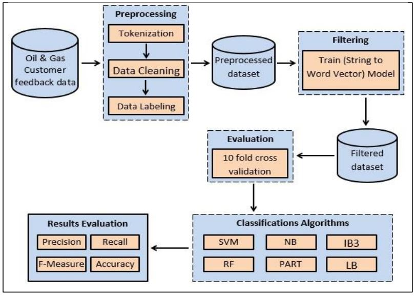
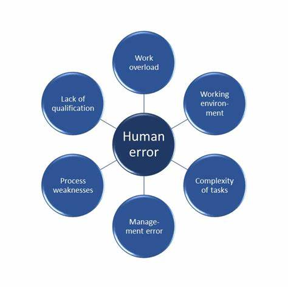

LIST OF PUBLICATIONS
- Understanding the Relation between System Usability and End User Performance Conference: 2021 2nd International Informatics and Software Engineering Conference (IISEC) At: Ankara, Turkey
- Survey on Interface Usability Evaluation for Oil and Gas Critical Control Systems Conference: 2021 2nd International Informatics and Software Engineering Conference (IISEC)At: Ankara, Turkey
- Investigating the Human factors that impact e-learning systems in oil and gas industry Conference: 1ST VIRTUAL INTERNATIONAL CONFERENCE ON SCIENCES: VICS2021At: Al-Anbar, Iraq Volume: 2400, 040003 (2022). AIP Conference Proceedings 2400(1):040003
- Comparative Analysis of Machine Learning Techniques using Customer Feedback Reviews of Oil and Gas Companies Conference: ICSIE 2020: 2020 9th International Conference on Software and Information Engineering At: Cairo, Egypt
- Investigating End User Errors in Oil and Gas Critical Control Systems Conference: ICCTA '20: 2020 6th International Conference on Computer and Technology Applications At: Ankara, Turkey

DOI: 10.1109/IISEC54230.2021.9672429
Abstract:
Web applications have been spreading everywhere. However, this may have a number of drawbacks mostly related to usability issues. Therefore, the investigation of usability problems continues to improve these applications. In this study, usability metrics are used for web application interface evaluation. The relation between web application usability and end user performance is investigated. Many studies have evaluated interface usability ... Read More
Web applications have been spreading everywhere. However, this may have a number of drawbacks mostly related to usability issues. Therefore, the investigation of usability problems continues to improve these applications. In this study, usability metrics are used for web application interface evaluation. The relation between web application usability and end user performance is investigated. Many studies have evaluated interface usability ... Read More
December 2021

DOI: 10.1109/IISEC54230.2021.9672449
Abstract:
Usability is the key to develop and improve any system as it represents the direct contact point between users and machines. The use of the critical control system in the oil and gas industry is increasing. Due to the complexity of these systems, its interface usability should be assessed and developed periodically. In this research, the attributes that affect interface usability are identified. The usability of the Torque Turns System (TTS) ... Read More
Usability is the key to develop and improve any system as it represents the direct contact point between users and machines. The use of the critical control system in the oil and gas industry is increasing. Due to the complexity of these systems, its interface usability should be assessed and developed periodically. In this research, the attributes that affect interface usability are identified. The usability of the Torque Turns System (TTS) ... Read More
December 2021
DOI: 10.1063/5.0112139
Abstract:
The use of digital media such as audio and video as a teaching media helps to achieve teaching goals better than following traditional teaching. It improves the engagement with the lecture and helps to deliver the education by lower cost and shorter time. Many companies use electronic Learning (e-learning) as an effective way to improve the knowledge, skills, and performance of their employees. For that, it became essential to ... Read More
The use of digital media such as audio and video as a teaching media helps to achieve teaching goals better than following traditional teaching. It improves the engagement with the lecture and helps to deliver the education by lower cost and shorter time. Many companies use electronic Learning (e-learning) as an effective way to improve the knowledge, skills, and performance of their employees. For that, it became essential to ... Read More
May 2021

DOI: 10.1145/3436829.3436871
Abstract:
Sentiment analysis is the process of computationally identifying and categorizing opinions from a piece of text to determine whether the writer’s attitude towards a practical topic, products or services is positive, negative or neutral. In this study, Machine Learning techniques are used to perform sentiment analysis on Oil and Gas customer feedback data. We present a comparison of different classification algorithms used for opinion mining,... Read More
Sentiment analysis is the process of computationally identifying and categorizing opinions from a piece of text to determine whether the writer’s attitude towards a practical topic, products or services is positive, negative or neutral. In this study, Machine Learning techniques are used to perform sentiment analysis on Oil and Gas customer feedback data. We present a comparison of different classification algorithms used for opinion mining,... Read More
November 2020

DOI: 10.1145/3397125.3397135
Abstract:
System availability and efficiency are critical in the petroleum sector as any fault affecting those systems may negatively impact operations resources, such as money, human resources and time. Therefore, it has become important to investigate the reasons for such errors. In this study, human error has been targeted since a number of these errors is projected to increase in the sector. The factors that ... Read More
System availability and efficiency are critical in the petroleum sector as any fault affecting those systems may negatively impact operations resources, such as money, human resources and time. Therefore, it has become important to investigate the reasons for such errors. In this study, human error has been targeted since a number of these errors is projected to increase in the sector. The factors that ... Read More
April 2020